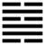

Thủy Phong Tỉnh (井 jǐng)
Lên (Thăng) tới cùng thì bị khốn, mà té xuống dưới, cho nên sau quẻ Khốn tới quẻ Tỉnh (giếng, tức chỗ thấp hơn hết).
Thoán từ:
井: 改邑不改井, 无喪无得, 往來井井．汔至, 亦未繘井, 羸其瓶, 凶．
Tỉnh: Cải ấp bất cải tỉnh, vô táng vô đắc, vãng lai tỉnh tỉnh.
Ngật chí, diệc vị duật tỉnh, luy kì bình, hung.
Dịch: giếng: đổi ấp chứ không đổi giếng, nước giếng không kiệt mà cũng không thêm; người qua người lại để múc nước giếng. Gần đến nơi (đến giếng), chưa kịp thòng dây gàu xuống mà bể cái bình đựng nước, thì xấu.
Giảng: Theo tượng quẻ, trên là nước (Khảm), dưới là gỗ (Tốn ở đây không hiểu là gió mà hiểu là cây, là đồ bằng gỗ - trỏ cái gàu), có nghĩa là thòng cái gàu xuống nước để múc lên.
Theo hình của quẻ: dưới cùng là một âm, như mạch nước, rồi tiến lên là hai hào dương, như lớp đất ở đáy giếng; tiến lên nữa là hào âm, tức nước giếng, lòng giếng: trên nữa là một vạch liền, tức cái nấp giếng, trên cùng là một vạch đứt, tức miệng giếng.
Đại tượng truyện giảng một cách khác: nước (Khảm) ở trên cây (Tốn), tức là nhựa (nước từ dưới đất theo thân cây lên) ở ngọn cây, cũng như mạch nước ở trong giếng, chảy ra, cho nên gọi là quẻ Tỉnh.
Bản thể của cái giếng là ở đâu thì ở đấy, ấp còn có khi thay đổi, chứ giếng thì cố định; có nước mạch chảy vô giếng hoài, nên nước giếng không kiệt, nhưng nước giếng chỉ lên tới một mực nào đó, không khi nào tràn ra. Công dụng của giếng là ai cũng lại giếng để lấy nước (tỉnh tỉnh: chữ tỉnh trên là động từ, chữ tỉnh dưới là danh từ), kẻ qua người lại thường, người nào cũng nhờ nó mà có nước, nó giúp đỡ mọi người mà như vô tâm.
Nói về nhân sự thì người đi lấy nước, đã gần tới rồi, chưa kịp thòng dây gàu (duật) xuống, mà đánh vỡ cái bình đựng nước thì thật uổng công; vậy làm việc gì cũng phải cẩn thận, đến nơi đến chốn để khỏi thất bại nửa chừng.
Thoán truyện bảo giếng ở đâu ở đấy, không thay đổi như ấp, vậy là có đức cương trung của hào 2 và hào 5.
Đại tượng truyện khuyên người quân tử nên coi tượng cái giếng mà nuôi dân và chỉ cho dân cách giúp đỡ lẫn nhau.
Ý nghĩa các hào:
1.
初六: 井泥不食．舊井无禽．
Sơ lục: tỉnh nê, bất thực, cựu tỉnh vô cầm.
Dịch: Hào 1, âm: Giếng lầy bùn, không ai lại lấy nước; không có con vật nào lại một giếng cũ.
Giảng: Hào 1 âm nhu, ở địa vị thấp nhất, hào 4 ở trên cũng không giúp gì nó, chính là hạng người vô dụng, bất tài, nên ví như cái giếng không có mạch, bị bùn, không ai lại lấy nước, chim muông cũng không tới.
2.
九二: 井谷, 射鮒, 甕敝漏．
Cửu nhị: Tỉnh cốc, xạ phụ, ủng tệ lậu.
Dịch: Hào 2, dương: giếng ở trong hang (có người hiểu là giếng có cái hang), nước chỉ lách tách ít giọt bắn vào con giếc, như cái chum nứt, nước dỉ ra.
Giảng: Hào này dương cương, có tài hơn hào 1, nhưng địa vị cũng thấp, trên cũng không có người ứng viện cho, nên cũng không làm nổi việc đời, ví như cái giếng nước tuy trong, nhưng nước mạch ít, chỉ dỉ ra đủ nuôi con giếc, chứ không có người tới múc. Hào này khác hào 1 ở chỗ 1 vì bất tài mà vô dụng, hào này vì hoàn cảnh mà hoá vô dụng.
3.
九三: 井渫不食, 為我心惻．可用汲. 王明, 並受其福．
Cửu tam: tỉnh tiết bất thực, vi ngã tâm trắc.
Khả dụng cấp; vương minh, tịnh thụ kì phúc.
Dịch: Hào 3, dương: giếng trong mà chẳng ăn, để lòng ta thương xót, có thể dùng mà múc lên được; gặp ông vua sáng suốt thì mọi người đều được phúc.
Giảng: Hào dương này đắc chính, là người có tài, muốn giúp đời, nhưng địa vị còn ở thấp (nội quái), không được dùng, ví như cái giếng nước trong mà không ai múc. Nếu được ông vua sáng suốt dùng, thì người đó sẽ giúp cho mọi người được nhờ.
4.
六四: 井甃, 无咎．
Lục tứ: Tỉnh trứu, vô cữu.
Dịch: Hào 4, âm: Giếng mà thành và đáy xếp đá, không có lỗi.
Giảng: Hào này âm nhu, tài tầm thường, nhưng đắc chính, ở gần hào 5 chí tôn, nên nhờ 5 mà làm được việc nhỏ, không có lỗi, ví như cái giếng mạch không nhiều, nhưng xếp đá ở thành và đáy, thì nước mạch thấm vào, lóng lại, cũng tạm dùng được.
5.
九五: 井洌, 寒泉食．
Cửu ngũ: Tỉnh liệt, hàn tuyền thực.
Dịch: Hào 5, dương: Nước giếng trong, lạnh, múc lên ăn được.
Giảng: Hào nay dương cương, đắc trung, ở ngôi chí tôn, có ân trạch với dân chúng, nên ví với nước giếng vừa trong, vừa mát, lại múc lên được.
6.
上六: 井收, 勿幕, 有孚, 元吉．
Thượng lục: Tỉnh thu, vật mạc, hữu phu, nguyên cát.
Dịch: Hào trên cùng, âm: Nước giếng múc lên rồi, đừng che đậy, cứ mãi mãi như vậy, không thay đổi thì rất tốt.
Giảng: Hào trên cùng này tuy là âm nhu, nhưng ở cuối cùng quẻ Tỉnh, nó có cái tượng nước giếng đã múc lên rồi, nên để cho mọi người dùng, chứ đừng che đậy, và cứ như vậy giúp đời mãi thì không gì tốt bằng.
*
Chúng ta để ý, quẻ Tỉnh này có điểm đặc biệt là các hào càng lên cao càng tốt, tốt nhất là hào trên cùng.
Thường các quẻ khác, hào trên cùng có nghĩa là cùng cực: hễ là quẻ tốt như quẻ Càn, quẻ thái thì hào trên cùng xấu; nếu là quẻ xấu như quẻ Bĩ, quẻ khốn thì hào trên cùng tốt, vì luật: cực thì phải biến, tốt biến ra xấu, xấu biến thành tốt. quẻ Tỉnh này với quẻ Đỉnh (và một số quẻ nữa như quẻ Tiêm...), hào trên cùng không có nghĩa cùng cực, mà có nghĩa là lúc cuối (chung), lúc nước đã múc lên (Tỉnh) hoặc thức ăn đã chính (đỉnh), tức là lúc thành công, cho nên đều tốt cả.